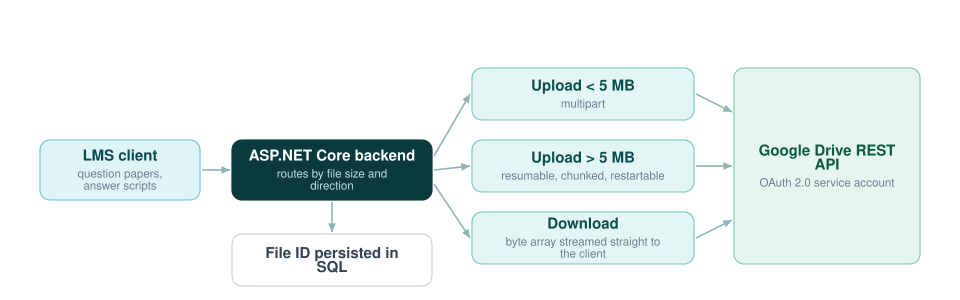

File Storage for an LMS Without Running Storage Servers
In a learning management system, file exchange is the core utility — question paper distribution, answer script submission, course material. Rather than buying and securing storage servers for it, I built the file layer on the Google Drive REST API from an ASP.NET Core backend.

Why offload the storage at all
An LMS handling answer scripts for a whole institution accumulates files quickly, and every one of them has to stay available and intact. Owning that storage means owning capacity planning, backups, redundancy and physical security. Offloading it to Drive removes the need for on-premise storage servers while inheriting enterprise-grade security and availability.
Implementation
- Multipart upload — optimised for small, metadata-heavy files under 5 MB, where a single request is cheaper than negotiating a session.
- Resumable upload — a chunk-based protocol for files above 5 MB, so a transfer that drops on an unstable connection resumes rather than restarts. This is the difference between a usable and an unusable system for students uploading over mobile networks.
- Streamed downloads — byte-array retrieval from the API piped directly into the user's local stream, so server memory stays flat regardless of how large the file is.
- Full lifecycle management — programmatic deletion and permission handling by file ID, with the ID persisted in SQL as the link between the LMS record and the stored object.
Outcome
The system eliminated the need for expensive on-premise storage servers while providing enterprise-grade security and high availability for academic documents.